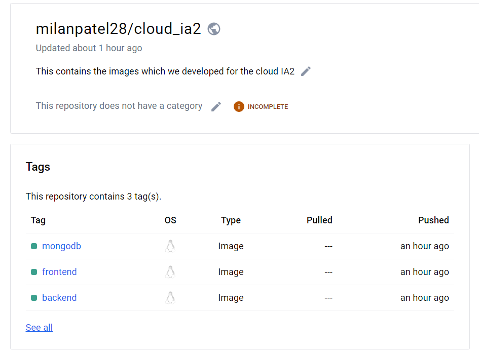

Understanding Dockerfiles
A Dockerfile is a text file that contains instructions for building a Docker image. Here's a sample
Dockerfile for each component:
-
MongoDB (Server) Dockerfile:
FROM mongo:latest
# Expose MongoDB port
EXPOSE 27017
-
Backend Dockerfile:
FROM node:latest
# Set working directory
WORKDIR /app
# Copy package.json and package-lock.json
COPY package*.json ./
# Install dependencies
RUN npm install
# Copy server files
COPY . .
# Expose port
EXPOSE 5000
# Command to run the server
CMD ["node", "index.js"]
-
Frontend Dockerfile:
# Use Node.js image as base
FROM node:latest AS build
# Set working directory
WORKDIR /app
# Copy package.json and package-lock.json
COPY package*.json ./
# Install dependencies
RUN npm install
# Copy the ReactJS application files
COPY . .
# Build the React app
RUN npm run build
# Production environment
FROM nginx:alpine
# Copy build files to Nginx
COPY --from=build /app/build /usr/share/nginx/html
# Expose port
EXPOSE 80
Building and Running Docker Images
To build and run Docker images, use the following commands:
Build MongoDB Server Image:
docker build -t 21bcp236-mongodb ./mongodb
Run MongoDB Container:
docker run -d --name 21bcp236-mongodb-container --network todolist_IA 21bcp236-mongodb
Build Backend Image:
docker build -t 21bcp236-backend ./backend
Run Backend Container:
docker run -d --name 21bcp236-backend-container --network todolist_IA 21bcp236-backend
Build Frontend Image:
docker build -t 21bcp236-frontend ./frontend
Run Frontend Container:
docker run -d --name 21bcp236-frontend-container --network todolist_IA 21bcp236-frontend
Pushing Docker Images to Docker Hub
Follow these steps to push Docker images to Docker Hub:
-
Login to Docker Hub:
docker login
Enter your Docker Hub username and password when prompted.
-
Tag the Docker Image:
docker tag my-mongodb username/my-mongodb
Replace username with your Docker Hub username.
-
Push the Docker Image:
docker push username/my-mongodb
This will push the MongoDB Docker image to your Docker Hub repository.
Repeat the same steps for Node.js and React.js Docker images.
Here is an image of my Docker Hub Repo containing the three images

Conclusion
By following the steps outlined in this guide, you can deploy a three-tier application using MongoDB,
Node.js, React.js, and Docker. This architecture provides scalability, flexibility, and ease of
deployment for modern web applications.